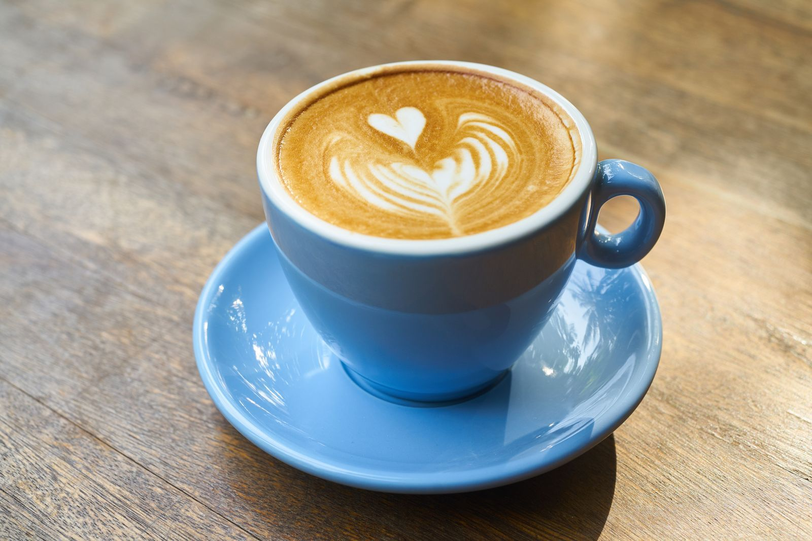
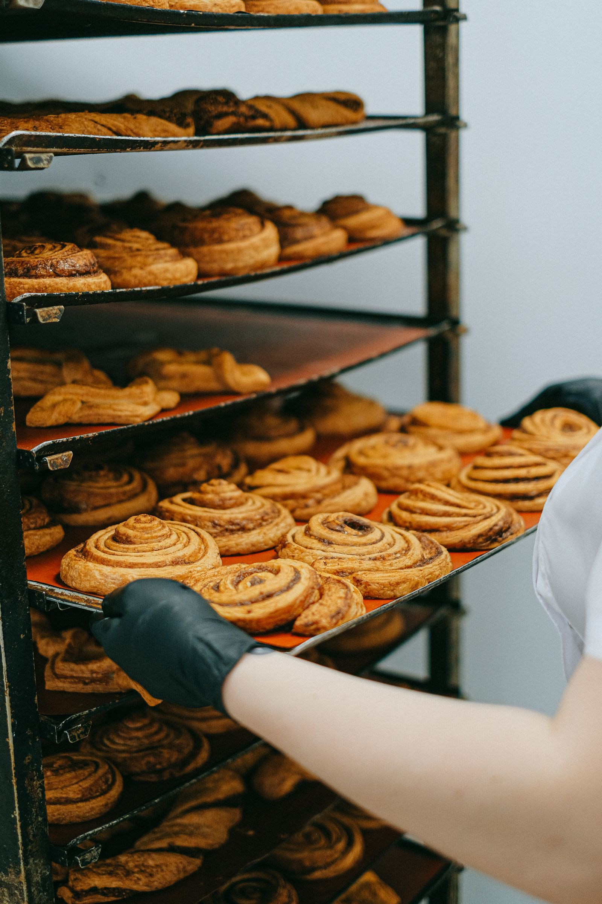

Cafe Single Fin
A surf-and-skate cafe in downtown Pensacola, with all-day breakfast and organic coffee.
Stock photo: A blue cup of latte with heart latte art on a wooden table. This is not a photo of Cafe Single Fin.
About
Cafe Single Fin is a surf-and-skate cafe inside the Waterboyz shop in downtown Pensacola. The cafe serves all-day breakfast, vegan and gluten-free options, acai bowls, mahi tacos, smoothies, organic coffee, and craft beer.
At the cafe
Inside the Waterboyz shop
Cafe Single Fin sits inside the Waterboyz shop in downtown Pensacola. Call (850) 433-2929 to ask about the menu.
Gallery


All gallery photos are stock photos, labeled as such. They show coffee and cafe food, not this cafe's cups or plates.
Visit
Address: 380 N 9th Ave, Pensacola, FL 32502
Hours: Monday to Saturday 8:00 AM to 8:00 PM. Sunday 8:00 AM to 3:00 PM.
Phone: (850) 433-2929
Contact
Cafe Single Fin serves Pensacola, FL. Questions? Call (850) 433-2929.